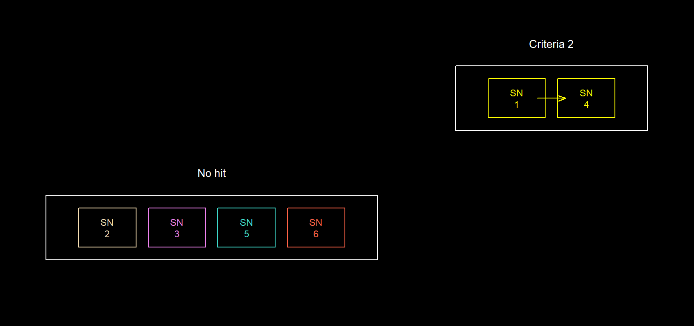
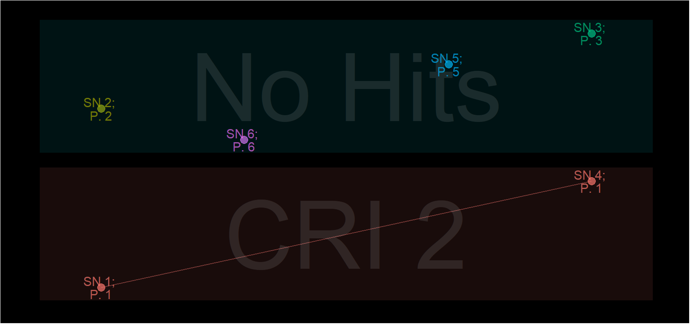
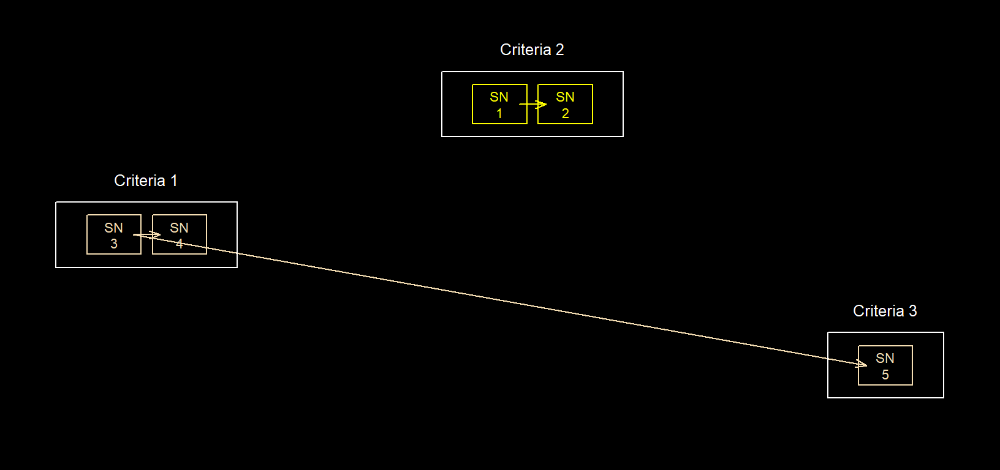
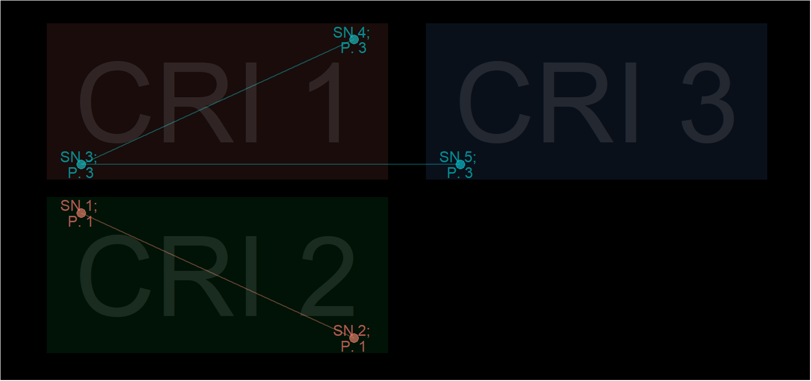
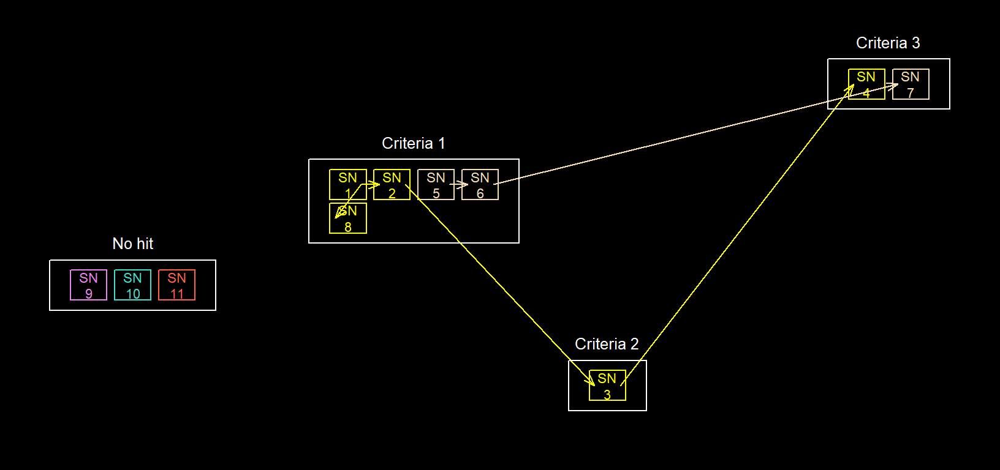
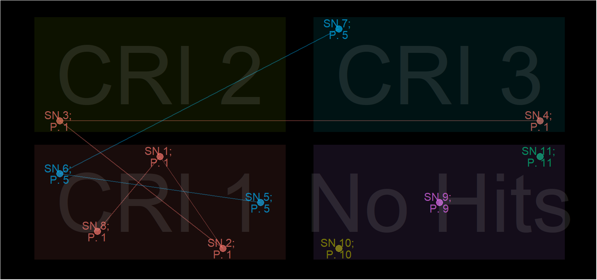

Linking datasets to consolidate information is a common task in research, particularly in those using “big data”. Deterministic record linkage is the simplest and most common method of doing this. However, its accuracy relies on data quality. links() provides a convenient and flexible approach of doing this while handing missing or incorrect data.
links() can be used to link datasets in a variety of ways. Examples include;
criteria
criteria and one (or more) matching sub_criteria. See record matching
Data matching is done in ordered stages. A match at each stage is considered more relevant than those at subsequent stages. Matched records are assigned a record group identifier. This is the record identifier (sn) of one of the matching records therefore, a familiar sn can prove useful.
Each matching stage has an attribute or characteristic to match (criteria). These must be passed as a list of atomic vectors.
Additional matching conditions (sub_criteria) can also be specified at each stage. This is done by supplying a list of sub_crieria(). Each sub_criteria() must be paired to a stage (criteria). This is done by naming each element in the list, using the syntax - "cr[n]". Where n is the corresponding stage (criteria) of interest (See examples). Any unpaired sub_criteria will be ignored. Records will only be assigned to the same group if they have the same criteria, and at least one matching attribute in each sub_criteria(). See examples below.
library(diyar); data(patient_list); dbs <- patient_list[c("forename","surname","sex")]; dbs #> forename surname sex #> 1 James Green M #> 2 ESTHER Kulmar F #> 3 <NA> OBI F #> 4 Jamey Green M #> 5 Daniel Kulmar M #> 6 Henry OBI M # 1 stage <- Matching surname only dbs$pids_a <- links(criteria = dbs$surname, display = "none", group_stats = T) # 2 stage - Matching surname, then matching sex dbs$pids_b <- links(criteria = list(dbs$surname, dbs$sex), display = "none") dbs #> forename surname sex pids_a pids_b #> 1 James Green M P.1 (CRI 001) P.1 (CRI 001) #> 2 ESTHER Kulmar F P.2 (CRI 001) P.2 (CRI 001) #> 3 <NA> OBI F P.3 (CRI 001) P.3 (CRI 001) #> 4 Jamey Green M P.1 (CRI 001) P.1 (CRI 001) #> 5 Daniel Kulmar M P.2 (CRI 001) P.2 (CRI 001) #> 6 Henry OBI M P.3 (CRI 001) P.3 (CRI 001)
Matched records are assigned to record groups. These are stored as pid objects (S4 object class). A pid object is a group identifier with slots for additional information about each group.
For a pid object created in multiple stages (criteria), the following information will be displayed (format.pid);
P.1 - group identifierCRI 001 - stage when that record was linkedSee ?links for further details.
to_df() transforms pid objects to data.frames.
#> to_df(`pid`)
#> pid sn pid_cri link_id pid_total iteration
#> 1 1 1 1 1 2 1
#> 2 2 2 1 2 2 1
#> 3 3 3 1 3 2 1
#> 4 1 4 1 1 2 1
#> 5 2 5 1 2 2 1
#> 6 3 6 1 3 2 1Attributes are checked for a case sensitive exact match. Those supplied via a sub_criteria() can also be compared by any logical test applicable to two atomic vectors. The logical test must be supplied as a function. This function must have two named arguments - x and y. Where y is the value for one observation to be compared against all other observations (x). See some examples below.
dbs2 <- patient_list[c("forename","surname","sex")]; dbs2 #> forename surname sex #> 1 James Green M #> 2 ESTHER Kulmar F #> 3 <NA> OBI F #> 4 Jamey Green M #> 5 Daniel Kulmar M #> 6 Henry OBI M # Matching `sex`, and `forename` initials lgl_1 <- function(x, y) substr(x, 1, 1) == substr(y, 1, 1) dbs2$pids_1 <- links(criteria = list(dbs2$sex), sub_criteria = list( cr1 = sub_criteria(dbs2$forename, match_funcs = lgl_1)), display = "none") # Matching `sex`, and `forename` with character length of 5 lgl_2 <- function(x, y) nchar(x) == nchar(y) & nchar(x) == 5 dbs2$pids_2 <- links(criteria = list(dbs2$sex), sub_criteria = list( cr1 = sub_criteria(dbs2$forename, match_funcs = lgl_2)), display = "none") # Matching `sex`, and `forename` that ends with "y" lgl_3 <- function(x, y) substr(x, length(x) - 1, length(x)) == "y" dbs2$pids_3 <- links(criteria = list(dbs2$sex), sub_criteria = list( cr1 = sub_criteria(dbs2$forename, match_funcs = lgl_3)), display = "none") # Matching `sex` and at least one `forename` that ends with "y" lgl_4 <- function(x, y) substr(y, length(y) - 1, length(y)) == "y" dbs2$pids_4 <- links(criteria = list(dbs2$sex), sub_criteria = list( cr1 = sub_criteria(dbs2$forename, match_funcs = lgl_4)), display = "none")
User-defined logical tests can be very useful for implementing complex matching conditions. For example, you can match observations if they are within a range or list of values. See the example below.
Opes_c <- Opes[c("date_of_birth", "name", "hair_colour")] Opes_c <- Opes["date_of_birth"] # approximate age Opes_c$age <- as.numeric(round((Sys.Date() - as.Date(Opes_c$date_of_birth, "%d/%m/%Y"))/365.5)) # Match individuals between ages 35 and 55 rng1 <- function(x, y) x %in% 35:55 Opes_c$pids_a <- links(criteria = "place_holder", sub_criteria = list(cr1 = sub_criteria(Opes_c$age, match_funcs = rng1)), display ="none") # Match individuals with a 5-year age gap between themselves rng2 <- function(x, y) abs(y - x) %in% 0:5 Opes_c$pids_b <- links(criteria = "place_holder", sub_criteria = list(cr1 = sub_criteria(Opes_c$age, match_funcs = rng2)), display ="none") # Match individuals with more than a 5-year age gap between each other rng3 <- function(x, y) (y - x) > 5 Opes_c$pids_c <- links(criteria = "place_holder", sub_criteria = list(cr1 = sub_criteria(Opes_c$age, match_funcs = rng3)), display ="none") Opes_c[c("age","pids_a", "pids_b", "pids_c")] #> age pids_a pids_b pids_c #> 1 35 P.6 (CRI 001) P.1 (CRI 001) P.6 (CRI 001) #> 2 35 P.6 (CRI 001) P.1 (CRI 001) P.6 (CRI 001) #> 3 53 P.6 (CRI 001) P.3 (CRI 001) P.6 (CRI 001) #> 4 36 P.6 (CRI 001) P.1 (CRI 001) P.6 (CRI 001) #> 5 36 P.6 (CRI 001) P.1 (CRI 001) P.6 (CRI 001) #> 6 57 P.6 (CRI 001) P.3 (CRI 001) P.6 (CRI 001) #> 7 57 P.7 (No hits) P.3 (CRI 001) P.7 (No hits) #> 8 35 P.6 (CRI 001) P.1 (CRI 001) P.6 (CRI 001)
links() goes through repeated checks for matches based on the logical test specified. At each iteration, one observation (y) is compared with every other observation (x). As a result, two observations (i.e. x[2] and x[3]) can pass the same logical test compared with a third observation (i.e. y). But not pass the same test when compared with each other. As an example, in Opes_c$pids_c above, records 1, 2, 4, 5 and 8 are within a 5-year gap of each other. This has happened because there’s more than a 5-year gap between themselves and record 7.
Always aim for the combination of conditions that’ll give more true positive matches. Linking records on matching surnames and then sex (pid_b) led to a different result. Compared to linking on sex before surnames (pid_c below) (See group expansion). In pid_b, a match on the individual’s surname was considered more relevant than a match on their sex. The opposite was the case for pid_c.
dbs$pids_c <- links(criteria = list(dbs$sex, dbs$surname), display = "none") dbs #> forename surname sex pids_a pids_b pids_c #> 1 James Green M P.1 (CRI 001) P.1 (CRI 001) P.1 (CRI 001) #> 2 ESTHER Kulmar F P.2 (CRI 001) P.2 (CRI 001) P.2 (CRI 001) #> 3 <NA> OBI F P.3 (CRI 001) P.3 (CRI 001) P.2 (CRI 001) #> 4 Jamey Green M P.1 (CRI 001) P.1 (CRI 001) P.1 (CRI 001) #> 5 Daniel Kulmar M P.2 (CRI 001) P.2 (CRI 001) P.1 (CRI 001) #> 6 Henry OBI M P.3 (CRI 001) P.3 (CRI 001) P.1 (CRI 001)
Both results are logically correct but pids_b is not the most practical option. For instance, records 3 and 6 which were linked but could be cousins and not the same individual. A better combination would be forename at stage 1, followed by surname and sex at stage 2. See pid_d below;
dbs_2 <- patient_list; dbs_2 #> rd_id forename surname sex #> 1 1 James Green M #> 2 2 ESTHER Kulmar F #> 3 3 <NA> OBI F #> 4 4 Jamey Green M #> 5 5 Daniel Kulmar M #> 6 6 Henry OBI M dbs_2$cri_2 <- paste(dbs_2$surname, dbs_2$sex,sep="-") dbs_2$pid_d <- links(sn = dbs_2$rd_id, list(dbs_2$forename, dbs_2$cri_2), display = "none") dbs_2 #> rd_id forename surname sex cri_2 pid_d #> 1 1 James Green M Green-M P.1 (CRI 002) #> 2 2 ESTHER Kulmar F Kulmar-F P.2 (No hits) #> 3 3 <NA> OBI F OBI-F P.3 (No hits) #> 4 4 Jamey Green M Green-M P.1 (CRI 002) #> 5 5 Daniel Kulmar M Kulmar-M P.5 (No hits) #> 6 6 Henry OBI M OBI-M P.6 (No hits)


Below are additional examples using different combinations of the same criteria and sub_criteria
data(Opes); Opes #> rd_id name department hair_colour date_of_birth db_pt1 db_pt2 db_pt3 #> 1 1 Ope Procurement Brown 23/03/1986 23/03 23/1986 03/1986 #> 2 2 Ope Security Brown 23/03/1986 23/03 23/1986 03/1986 #> 3 3 Ope Security Brown 23/03/1968 23/03 23/1968 03/1968 #> 4 4 Ope Publishing Green 01/02/1985 01/02 01/1985 02/1985 #> 5 5 Ope Publishing Teal 02/01/1985 02/01 02/1985 01/1985 #> 6 6 Ope Publishing Grey 11/03/1964 11/03 11/1964 03/1964 #> 7 7 Ope Publishing White 11/03/1964 11/03 11/1964 03/1964 #> 8 8 Ope Procurement Black 11/10/1985 11/10 11/1985 10/1985 # 1 stage linkage # stage 1 - name AND (department OR hair_colour OR date_of_birth) Opes$pids_a <- links(criteria = Opes$name, sub_criteria = list(cr1 = sub_criteria(Opes$department, Opes$hair_colour, Opes$date_of_birth)), display = "none" ) Opes[c("name","department","hair_colour","date_of_birth","pids_a")] #> name department hair_colour date_of_birth pids_a #> 1 Ope Procurement Brown 23/03/1986 P.1 (CRI 001) #> 2 Ope Security Brown 23/03/1986 P.1 (CRI 001) #> 3 Ope Security Brown 23/03/1968 P.1 (CRI 001) #> 4 Ope Publishing Green 01/02/1985 P.4 (CRI 001) #> 5 Ope Publishing Teal 02/01/1985 P.4 (CRI 001) #> 6 Ope Publishing Grey 11/03/1964 P.4 (CRI 001) #> 7 Ope Publishing White 11/03/1964 P.4 (CRI 001) #> 8 Ope Procurement Black 11/10/1985 P.1 (CRI 001) # 1 stage linkage # stage 1 - name AND ((department OR hair_colour) AND (date_of_birth)) Opes$pids_b <- links(criteria = Opes$name, sub_criteria = list(cr1 = sub_criteria(Opes$department, Opes$hair_colour), cr1 = sub_criteria(Opes$date_of_birth)), display = "none") Opes[c("name","department","hair_colour","date_of_birth","pids_b")] #> name department hair_colour date_of_birth pids_b #> 1 Ope Procurement Brown 23/03/1986 P.1 (CRI 001) #> 2 Ope Security Brown 23/03/1986 P.1 (CRI 001) #> 3 Ope Security Brown 23/03/1968 P.1 (CRI 001) #> 4 Ope Publishing Green 01/02/1985 P.4 (CRI 001) #> 5 Ope Publishing Teal 02/01/1985 P.4 (CRI 001) #> 6 Ope Publishing Grey 11/03/1964 P.4 (CRI 001) #> 7 Ope Publishing White 11/03/1964 P.4 (CRI 001) #> 8 Ope Procurement Black 11/10/1985 P.1 (CRI 001) # 1 stage linkage # stage 1 - name AND ((department OR hair_colour) AND (dd-mm OR dd-yyyy OR mm-yyyy)) Opes$pids_c <- links(criteria = Opes$name, sub_criteria = list(cr1 = sub_criteria(Opes$department, Opes$hair_colour), cr1 = sub_criteria(Opes$db_pt1, Opes$db_pt2, Opes$db_pt3)), display = "none") Opes[c("name","department","hair_colour","date_of_birth","pids_c")] #> name department hair_colour date_of_birth pids_c #> 1 Ope Procurement Brown 23/03/1986 P.1 (CRI 001) #> 2 Ope Security Brown 23/03/1986 P.1 (CRI 001) #> 3 Ope Security Brown 23/03/1968 P.1 (CRI 001) #> 4 Ope Publishing Green 01/02/1985 P.4 (CRI 001) #> 5 Ope Publishing Teal 02/01/1985 P.4 (CRI 001) #> 6 Ope Publishing Grey 11/03/1964 P.4 (CRI 001) #> 7 Ope Publishing White 11/03/1964 P.4 (CRI 001) #> 8 Ope Procurement Black 11/10/1985 P.1 (CRI 001) # 1 stage linkage # stage 1 - name AND ((department) AND (hair_colour) AND (dd-mm OR dd-yyyy OR mm-yyyy)) Opes$pids_d <- links(criteria = Opes$name, sub_criteria = list(cr1 = sub_criteria(Opes$department), cr1 = sub_criteria(Opes$hair_colour), cr1 = sub_criteria(Opes$db_pt1, Opes$db_pt2, Opes$db_pt3)), display = "none") Opes[c("name","department","hair_colour","date_of_birth","pids_d")] #> name department hair_colour date_of_birth pids_d #> 1 Ope Procurement Brown 23/03/1986 P.1 (CRI 001) #> 2 Ope Security Brown 23/03/1986 P.2 (CRI 001) #> 3 Ope Security Brown 23/03/1968 P.2 (CRI 001) #> 4 Ope Publishing Green 01/02/1985 P.4 (CRI 001) #> 5 Ope Publishing Teal 02/01/1985 P.4 (CRI 001) #> 6 Ope Publishing Grey 11/03/1964 P.4 (CRI 001) #> 7 Ope Publishing White 11/03/1964 P.4 (CRI 001) #> 8 Ope Procurement Black 11/10/1985 P.1 (CRI 001)
By default, matches at different stages are linked together. The more stages (criteria) there are in an instance of links(), the larger a record group becomes. Priority is always given to matches that occurred at earlier stages. As a result, it’s important that criteria are listed in decreasing order of certainty. You can disable the link between stages by changing the expand argument to FALSE. See a simple example below.
data(Opes); Opes #> rd_id name department hair_colour date_of_birth db_pt1 db_pt2 db_pt3 #> 1 1 Ope Procurement Brown 23/03/1986 23/03 23/1986 03/1986 #> 2 2 Ope Security Brown 23/03/1986 23/03 23/1986 03/1986 #> 3 3 Ope Security Brown 23/03/1968 23/03 23/1968 03/1968 #> 4 4 Ope Publishing Green 01/02/1985 01/02 01/1985 02/1985 #> 5 5 Ope Publishing Teal 02/01/1985 02/01 02/1985 01/1985 #> 6 6 Ope Publishing Grey 11/03/1964 11/03 11/1964 03/1964 #> 7 7 Ope Publishing White 11/03/1964 11/03 11/1964 03/1964 #> 8 8 Ope Procurement Black 11/10/1985 11/10 11/1985 10/1985 # 2 stage linkage # stage 1 - link "Opes" in departments that start with the letter "P" THEN # stage 2 - bridge these to "Opes" whose hair colour starts with the letter "B" dept_func <- function(x, y) substr(x, 1, 1) == substr(y, 1, 1) & substr(y, 1, 1) == "P" hair_func <- function(x, y) substr(x, 1, 1) == substr(y, 1, 1) & substr(y, 1, 1) == "B" Opes$p_exp_a <- links(criteria = list(Opes$name, Opes$name), sub_criteria = list( cr1 = sub_criteria(Opes$department, match_funcs = dept_func), cr2 = sub_criteria(Opes$hair_colour, match_funcs = hair_func)), display = "none") # 2 stage linkage # stage 1 - link "Opes" in departments that start with the letter "P" THEN # stage 2 - link "Opes" whose hair colour starts with the letter "B" Opes$p_nexp_a <- links(criteria = list(Opes$name, Opes$name), sub_criteria = list( cr1 = sub_criteria(Opes$department, match_funcs = dept_func), cr2 = sub_criteria(Opes$hair_colour, match_funcs = hair_func)), expand = F, display = "none") Opes[c("name","department","hair_colour", "p_exp_a", "p_nexp_a")] #> name department hair_colour p_exp_a p_nexp_a #> 1 Ope Procurement Brown P.1 (CRI 001) P.1 (CRI 001) #> 2 Ope Security Brown P.1 (CRI 002) P.2 (No hits) #> 3 Ope Security Brown P.1 (CRI 002) P.3 (No hits) #> 4 Ope Publishing Green P.1 (CRI 001) P.1 (CRI 001) #> 5 Ope Publishing Teal P.1 (CRI 001) P.1 (CRI 001) #> 6 Ope Publishing Grey P.1 (CRI 001) P.1 (CRI 001) #> 7 Ope Publishing White P.1 (CRI 001) P.1 (CRI 001) #> 8 Ope Procurement Black P.1 (CRI 001) P.1 (CRI 001)
Note that changing expand to TRUE is not the same as reversing the relevance of your matching conditions. See below.
# The same as `p_exp_a` Opes$p_exp_b <- links(criteria = list(Opes$name, Opes$name), sub_criteria = list( cr2 = sub_criteria(Opes$department, match_funcs = dept_func), cr1 = sub_criteria(Opes$hair_colour, match_funcs = hair_func)), display = "none") # Not the same as `p_nexp_a` Opes$p_nexp_b <- links(criteria = list(Opes$name, Opes$name), sub_criteria = list( cr2 = sub_criteria(Opes$department, match_funcs = dept_func), cr1 = sub_criteria(Opes$hair_colour, match_funcs = hair_func)), expand = F, display = "none") Opes[c("name","department","hair_colour", "p_exp_a", "p_exp_b", "p_nexp_a", "p_nexp_b")] #> name department hair_colour p_exp_a p_exp_b p_nexp_a #> 1 Ope Procurement Brown P.1 (CRI 001) P.1 (CRI 001) P.1 (CRI 001) #> 2 Ope Security Brown P.1 (CRI 002) P.1 (CRI 001) P.2 (No hits) #> 3 Ope Security Brown P.1 (CRI 002) P.1 (CRI 001) P.3 (No hits) #> 4 Ope Publishing Green P.1 (CRI 001) P.1 (CRI 002) P.1 (CRI 001) #> 5 Ope Publishing Teal P.1 (CRI 001) P.1 (CRI 002) P.1 (CRI 001) #> 6 Ope Publishing Grey P.1 (CRI 001) P.1 (CRI 002) P.1 (CRI 001) #> 7 Ope Publishing White P.1 (CRI 001) P.1 (CRI 002) P.1 (CRI 001) #> 8 Ope Procurement Black P.1 (CRI 001) P.1 (CRI 001) P.1 (CRI 001) #> p_nexp_b #> 1 P.1 (CRI 001) #> 2 P.1 (CRI 001) #> 3 P.1 (CRI 001) #> 4 P.4 (CRI 002) #> 5 P.4 (CRI 002) #> 6 P.4 (CRI 002) #> 7 P.4 (CRI 002) #> 8 P.1 (CRI 001)
Example 1 of group expansion
data(patient_list_2); patient_list_2 #> rd_id forename surname sex #> 1 1 <NA> Jefferson Male #> 2 2 <NA> Jefferson Female #> 3 3 Tomi Abdul Male #> 4 4 Tomi Abdulkareem Female #> 5 5 <NA> <NA> Male patient_list_2$pids_a <- links( sn = patient_list_2$rd_id, criteria = list(patient_list_2$forename, patient_list_2$surname, patient_list_2$sex), display = "none") patient_list_2 #> rd_id forename surname sex pids_a #> 1 1 <NA> Jefferson Male P.1 (CRI 002) #> 2 2 <NA> Jefferson Female P.1 (CRI 002) #> 3 3 Tomi Abdul Male P.3 (CRI 001) #> 4 4 Tomi Abdulkareem Female P.3 (CRI 001) #> 5 5 <NA> <NA> Male P.3 (CRI 003)


Example 2 of group expansion
df <- data.frame( forename = c("John", "John", "Jon", NA_character_, "Mary", "Mary", "Mariam", "John", "Henry", "Obinna", "Tomi"), surname = c("Swan", "Swanley", "Swanley", NA_character_, "Jane", "Jan", "Janet", "Swan", "Henderson", "Nelson", "Abdulkareem"), age = c(12, 11, 10, 10, 5, 6, 6, 12, 30, 31, 2500) ) df$pids_a <- links(criteria = list(df$forename, df$surname, df$age), display = "none") df #> forename surname age pids_a #> 1 John Swan 12 P.01 (CRI 001) #> 2 John Swanley 11 P.01 (CRI 001) #> 3 Jon Swanley 10 P.01 (CRI 002) #> 4 <NA> <NA> 10 P.01 (CRI 003) #> 5 Mary Jane 5 P.05 (CRI 001) #> 6 Mary Jan 6 P.05 (CRI 001) #> 7 Mariam Janet 6 P.05 (CRI 003) #> 8 John Swan 12 P.01 (CRI 001) #> 9 Henry Henderson 30 P.09 (No hits) #> 10 Obinna Nelson 31 P.10 (No hits) #> 11 Tomi Abdulkareem 2500 P.11 (No hits)


You can also specify the opposite behaviour. Where a record group becomes smaller with each subsequent stage. If there is no sub_criteria, the easiest way of doing this is to concatenate the attributes in each stage. See the example below.
data(Opes); Opes #> rd_id name department hair_colour date_of_birth db_pt1 db_pt2 db_pt3 #> 1 1 Ope Procurement Brown 23/03/1986 23/03 23/1986 03/1986 #> 2 2 Ope Security Brown 23/03/1986 23/03 23/1986 03/1986 #> 3 3 Ope Security Brown 23/03/1968 23/03 23/1968 03/1968 #> 4 4 Ope Publishing Green 01/02/1985 01/02 01/1985 02/1985 #> 5 5 Ope Publishing Teal 02/01/1985 02/01 02/1985 01/1985 #> 6 6 Ope Publishing Grey 11/03/1964 11/03 11/1964 03/1964 #> 7 7 Ope Publishing White 11/03/1964 11/03 11/1964 03/1964 #> 8 8 Ope Procurement Black 11/10/1985 11/10 11/1985 10/1985 # 1 stage linkage # stage 1 - link "Opes" that are in the same department AND have the same day and month of birth Opes$cri <- paste(Opes$name, Opes$department, Opes$db_pt1, sep = " ") Opes$p_shk_c <- links(criteria = list(Opes$cri), display = "none") Opes[c("name","department","db_pt3", "p_shk_c")] #> name department db_pt3 p_shk_c #> 1 Ope Procurement 03/1986 P.1 (No hits) #> 2 Ope Security 03/1986 P.2 (CRI 001) #> 3 Ope Security 03/1968 P.2 (CRI 001) #> 4 Ope Publishing 02/1985 P.4 (No hits) #> 5 Ope Publishing 01/1985 P.5 (No hits) #> 6 Ope Publishing 03/1964 P.6 (CRI 001) #> 7 Ope Publishing 03/1964 P.6 (CRI 001) #> 8 Ope Procurement 10/1985 P.8 (No hits)
If there’s a sub_criteria, you’ll need to use the shrink argument. See the example below. The same analysis is repeated using sub_criteria.
# 3 stage linkage # stage 1 - link "Opes" that have the same name, THEN WITHIN THESE # stage 2 - link "Opes" that are in the same department, THEN WITHIN THESE # stage 3 - link "Opes" have the same day and month of birth Opes$p_shk_d <- links(criteria = list(Opes$name, Opes$department, Opes$db_pt1), sub_criteria = list( cr1 = sub_criteria("place_holder", match_funcs = diyar::exact_match), cr2 = sub_criteria("place_holder", match_funcs = diyar::exact_match), cr3 = sub_criteria("place_holder", match_funcs = diyar::exact_match) ), shrink = T, display = "none") Opes[c("name","department","db_pt3", "p_shk_c", "p_shk_d")] #> name department db_pt3 p_shk_c p_shk_d #> 1 Ope Procurement 03/1986 P.1 (No hits) P.1 (CRI 002) #> 2 Ope Security 03/1986 P.2 (CRI 001) P.2 (CRI 003) #> 3 Ope Security 03/1968 P.2 (CRI 001) P.2 (CRI 003) #> 4 Ope Publishing 02/1985 P.4 (No hits) P.4 (CRI 002) #> 5 Ope Publishing 01/1985 P.5 (No hits) P.4 (CRI 002) #> 6 Ope Publishing 03/1964 P.6 (CRI 001) P.6 (CRI 003) #> 7 Ope Publishing 03/1964 P.6 (CRI 001) P.6 (CRI 003) #> 8 Ope Procurement 10/1985 P.8 (No hits) P.1 (CRI 002)
Although p_shk_c and p_shk_d are identical, the pid_cri slot for both are different. This reflects the different ways they were created. p_shk_d is the equivalent of three compounding (using strata) instances of links(). See below.
# 1 stage linkage # stage 1 - link "Opes" that have the same name Opes$p_shk_e1 <- links(criteria = list(Opes$name), sub_criteria = list( cr1 = sub_criteria("place_holder", match_funcs = diyar::exact_match)), shrink = T, display = "none") # Another attempt is made always made at the next for records with no links Opes$e1 <- ifelse(Opes$p_shk_e1@pid_cri == 0, "No Hits", as.character(Opes$p_shk_e1)) # 1 stage linkage # stage 1 - link "Opes" that are in the same department Opes$p_shk_e2 <- links(criteria = list(Opes$department), strata = Opes$e1, sub_criteria = list( cr1 = sub_criteria("place_holder", match_funcs = diyar::exact_match)), shrink = T, display = "none") # Another attempt is made always made at the next for records with no links Opes$e2 <- ifelse(Opes$p_shk_e1@pid_cri == 0, "No Hits", as.character(Opes$p_shk_e1)) # 1 stage linkage # stage 3 - link "Opes" have the same day and month of birth Opes$p_shk_e3 <- links(criteria = list(Opes$db_pt1), strata = Opes$e2, sub_criteria = list( cr1 = sub_criteria("place_holder", match_funcs = diyar::exact_match)), shrink = T, display = "none") Opes[c("name","department","db_pt3", "p_shk_e1", "p_shk_e2", "p_shk_e3", "p_shk_c", "p_shk_d")] #> name department db_pt3 p_shk_e1 p_shk_e2 p_shk_e3 #> 1 Ope Procurement 03/1986 P.1 (CRI 001) P.1 (CRI 001) P.1 (CRI 001) #> 2 Ope Security 03/1986 P.1 (CRI 001) P.2 (CRI 001) P.1 (CRI 001) #> 3 Ope Security 03/1968 P.1 (CRI 001) P.2 (CRI 001) P.1 (CRI 001) #> 4 Ope Publishing 02/1985 P.1 (CRI 001) P.4 (CRI 001) P.4 (No hits) #> 5 Ope Publishing 01/1985 P.1 (CRI 001) P.4 (CRI 001) P.5 (No hits) #> 6 Ope Publishing 03/1964 P.1 (CRI 001) P.4 (CRI 001) P.6 (CRI 001) #> 7 Ope Publishing 03/1964 P.1 (CRI 001) P.4 (CRI 001) P.6 (CRI 001) #> 8 Ope Procurement 10/1985 P.1 (CRI 001) P.1 (CRI 001) P.8 (No hits) #> p_shk_c p_shk_d #> 1 P.1 (No hits) P.1 (CRI 002) #> 2 P.2 (CRI 001) P.2 (CRI 003) #> 3 P.2 (CRI 001) P.2 (CRI 003) #> 4 P.4 (No hits) P.4 (CRI 002) #> 5 P.5 (No hits) P.4 (CRI 002) #> 6 P.6 (CRI 001) P.6 (CRI 003) #> 7 P.6 (CRI 001) P.6 (CRI 003) #> 8 P.8 (No hits) P.1 (CRI 002)
Note that the expand functionality is not always interchangeable with that of shrink. See an example of the difference below.
data(Opes); Opes #> rd_id name department hair_colour date_of_birth db_pt1 db_pt2 db_pt3 #> 1 1 Ope Procurement Brown 23/03/1986 23/03 23/1986 03/1986 #> 2 2 Ope Security Brown 23/03/1986 23/03 23/1986 03/1986 #> 3 3 Ope Security Brown 23/03/1968 23/03 23/1968 03/1968 #> 4 4 Ope Publishing Green 01/02/1985 01/02 01/1985 02/1985 #> 5 5 Ope Publishing Teal 02/01/1985 02/01 02/1985 01/1985 #> 6 6 Ope Publishing Grey 11/03/1964 11/03 11/1964 03/1964 #> 7 7 Ope Publishing White 11/03/1964 11/03 11/1964 03/1964 #> 8 8 Ope Procurement Black 11/10/1985 11/10 11/1985 10/1985 Opes$p_cmp1 <- links(criteria = list("place_holder", "place_holder"), sub_criteria = list( cr1 = sub_criteria(Opes$department, match_funcs = dept_func), cr2 = sub_criteria(Opes$hair_colour, match_funcs = hair_func)), expand = T, shrink = F, display = "none") Opes$p_cmp2 <- links(criteria = list("place_holder", "place_holder"), sub_criteria = list( cr1 = sub_criteria(Opes$department, match_funcs = dept_func), cr2 = sub_criteria(Opes$hair_colour, match_funcs = hair_func)), expand = F, shrink = T, display = "none") # `p_cmp1` is not the same as `p_cmp2` Opes[c("name", "department", "hair_colour", "p_cmp1", "p_cmp2")] #> name department hair_colour p_cmp1 p_cmp2 #> 1 Ope Procurement Brown P.1 (CRI 001) P.1 (CRI 002) #> 2 Ope Security Brown P.1 (CRI 002) P.2 (CRI 002) #> 3 Ope Security Brown P.1 (CRI 002) P.2 (CRI 002) #> 4 Ope Publishing Green P.1 (CRI 001) P.4 (No hits) #> 5 Ope Publishing Teal P.1 (CRI 001) P.5 (No hits) #> 6 Ope Publishing Grey P.1 (CRI 001) P.6 (No hits) #> 7 Ope Publishing White P.1 (CRI 001) P.7 (No hits) #> 8 Ope Procurement Black P.1 (CRI 001) P.1 (CRI 002)
Records with missing values are excluded from particular stages of the linkage process. If a record has missing values at every stage, it’s assigned to a unique group where it’s the only member.
It’s common for databases to use specific characters or numbers to represent missing or unknown data e.g. N/A, Nil, 01/01/1100, 111111 e.t.c. These pseudo-missing values must need to be re-coded to NA, so that links() recognises them as missing values. If this is not done, it can lead to a cascade of false matches as seen below.
patient_list_2$forename <- ifelse(patient_list_2$rd_id %in% 1:3, "Nil", patient_list_2$forename) # 2 stage linkage # Stage 1 - forename # Stage 2 - surname patient_list_2$pids_b <- links(criteria = list(patient_list_2$forename, patient_list_2$surname), display = "none") patient_list_2[c("forename","surname","pids_b")] #> forename surname pids_b #> 1 Nil Jefferson P.1 (CRI 001) #> 2 Nil Jefferson P.1 (CRI 001) #> 3 Nil Abdul P.1 (CRI 001) #> 4 Tomi Abdulkareem P.4 (No hits) #> 5 <NA> <NA> P.5 (No hits)
In the example above, records 1-3 are assigned to the same record group even though record 3 seems to be a different person. However, changing "Nil" to NA let links() know that "Nil" is not a valid forename, and it is skipped. See below.
# `NA` as the proxy for missing value patient_list_2$forename <- ifelse(patient_list_2$forename == "Nil", NA, patient_list_2$forename) patient_list_2$pids_d <- links(sn = patient_list_2$rd_id, criteria = list(patient_list_2$forename, patient_list_2$surname), display = "none") patient_list_2[c("forename","surname", "pids_b", "pids_d")] #> forename surname pids_b pids_d #> 1 <NA> Jefferson P.1 (CRI 001) P.1 (CRI 002) #> 2 <NA> Jefferson P.1 (CRI 001) P.1 (CRI 002) #> 3 <NA> Abdul P.1 (CRI 001) P.3 (No hits) #> 4 Tomi Abdulkareem P.4 (No hits) P.4 (No hits) #> 5 <NA> <NA> P.5 (No hits) P.5 (No hits)
criteria over sub_criteria
sub_criteria are required for user-defined logical tests. However, it takes more time to compare sub_criteria than it does criteria. You can save some time by only using a sub_criteria when the matching conditions can not be specified as a criteria. For example, the logical test lgl_1 (above) was supplied as a sub_criteria. links() will create that group identifier faster, if it’s supplied as a criteria. See below.
# Matching `sex`, and `forename` initials dbs2 #> forename surname sex pids_1 pids_2 pids_3 pids_4 #> 1 James Green M P.1 (CRI 001) P.1 (CRI 001) P.5 (CRI 001) P.4 (CRI 001) #> 2 ESTHER Kulmar F P.2 (No hits) P.2 (No hits) P.2 (No hits) P.2 (No hits) #> 3 <NA> OBI F P.3 (No hits) P.3 (No hits) P.3 (No hits) P.3 (No hits) #> 4 Jamey Green M P.1 (CRI 001) P.1 (CRI 001) P.5 (CRI 001) P.4 (CRI 001) #> 5 Daniel Kulmar M P.5 (No hits) P.5 (No hits) P.5 (CRI 001) P.4 (CRI 001) #> 6 Henry OBI M P.6 (No hits) P.1 (CRI 001) P.5 (CRI 001) P.4 (CRI 001) dbs2$initials <- substr(dbs2$forename, 1, 1) dbs2$pids_1b <- links(criteria = dbs2$initials, display = "none") dbs2[c("forename", "initials", "pids_1", "pids_1b")] #> forename initials pids_1 pids_1b #> 1 James J P.1 (CRI 001) P.1 (CRI 001) #> 2 ESTHER E P.2 (No hits) P.2 (No hits) #> 3 <NA> <NA> P.3 (No hits) P.3 (No hits) #> 4 Jamey J P.1 (CRI 001) P.1 (CRI 001) #> 5 Daniel D P.5 (No hits) P.5 (No hits) #> 6 Henry H P.6 (No hits) P.6 (No hits)
Similarly, avoid using single-attribute sub_criteria that are paired to the same criteria. Instead, concatenate these together as one criteria. For example, the two implementations below (pids_e and pids_f) will have the same result. But pids_f will take less time.
# 1 stage linkage # stage 1 - name AND ((department) AND (hair_colour) AND (year_of_birth)) Opes$month_of_birth <- substr(Opes$date_of_birth, 4, 5) Opes$pids_e <- links(criteria = Opes$name, sub_criteria = list(cr1 = sub_criteria(Opes$department), cr1 = sub_criteria(Opes$hair_colour), cr1 = sub_criteria(Opes$month_of_birth)), display = "none") Opes$cri <- paste(Opes$name, Opes$month_of_birth, Opes$department, Opes$hair_colour, sep="-") # 1 stage linkage # stage 1 - name AND department AND hair_colour AND date_of_birth Opes$pids_f <- links(criteria = Opes$cri, display = "none") Opes[c("name","department","hair_colour","month_of_birth","pids_e","pids_f")] #> name department hair_colour month_of_birth pids_e pids_f #> 1 Ope Procurement Brown 03 P.1 (CRI 001) P.1 (No hits) #> 2 Ope Security Brown 03 P.2 (CRI 001) P.2 (CRI 001) #> 3 Ope Security Brown 03 P.2 (CRI 001) P.2 (CRI 001) #> 4 Ope Publishing Green 02 P.4 (CRI 001) P.4 (No hits) #> 5 Ope Publishing Teal 01 P.4 (CRI 001) P.5 (No hits) #> 6 Ope Publishing Grey 03 P.4 (CRI 001) P.6 (No hits) #> 7 Ope Publishing White 03 P.4 (CRI 001) P.7 (No hits) #> 8 Ope Procurement Black 10 P.1 (CRI 001) P.8 (No hits)
This time difference could become more noticeable with larger datasets.
links() is a convenient tool for routine data linkage. But it’s more useful in handling complex matching conditions, missing data and multistage linkage. The more complex the scenario, the more likely its convenience outweighs the complexity of scripting them. Simple matching conditions or one-stage linkages are possible with links(). But this takes slightly more time than base R alternatives. See the example below.
Opes[c("department")] #> department #> 1 Procurement #> 2 Security #> 3 Security #> 4 Publishing #> 5 Publishing #> 6 Publishing #> 7 Publishing #> 8 Procurement Opes$links_a <- links(Opes$department, display = "none") Opes$links_b <- match(Opes$department, Opes$department[!duplicated(Opes$department)]) Opes[c("department", "links_a", "links_b")] #> department links_a links_b #> 1 Procurement P.1 (CRI 001) 1 #> 2 Security P.2 (CRI 001) 2 #> 3 Security P.2 (CRI 001) 2 #> 4 Publishing P.4 (CRI 001) 3 #> 5 Publishing P.4 (CRI 001) 3 #> 6 Publishing P.4 (CRI 001) 3 #> 7 Publishing P.4 (CRI 001) 3 #> 8 Procurement P.1 (CRI 001) 1
This time difference could become more noticeable with larger datasets.
As a general rule, the more unique the criteria, the earlier it should be used in the linkage process. Always use a reasonable order of relevance for each dataset. Not too strict and not too lax. links() will try to reduce false mismatches due to random data entry errors or missing values. Always balance the use of matching attributes with their availability and accuracy.